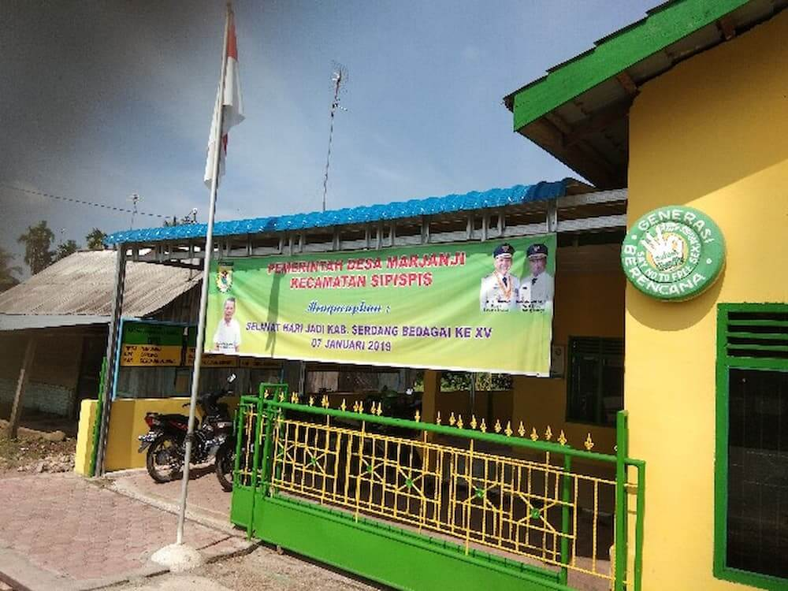
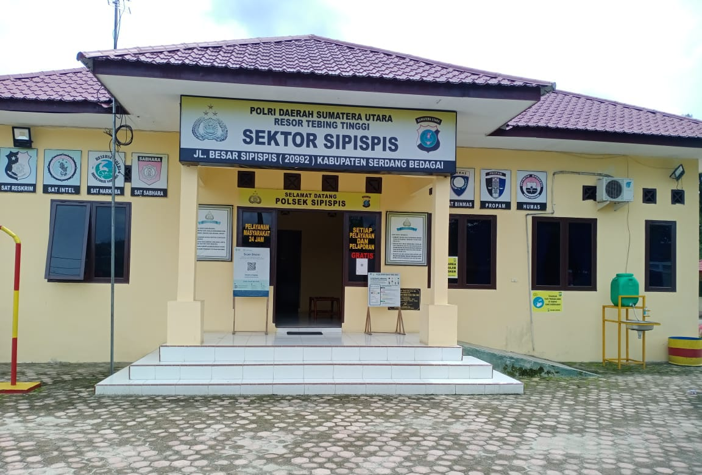
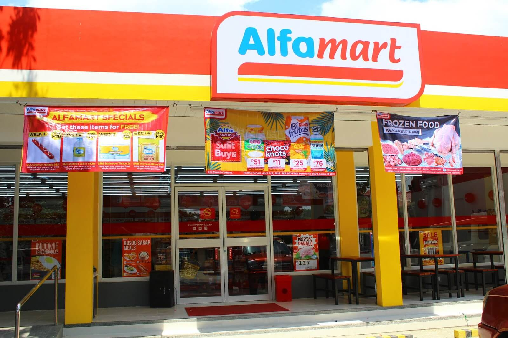

Desa marjanji kecamatan sipispis serdang bedagai sumatera utara indonesia
" 19 Juli 2024 author -- Karim Saragih Simarmata "
Sxiimart.com - Desa Marjanji adalah desa di kecamatan sipipis, Serdang bedagai, Sumatera Utara, Indonesia. Desa Marjanji memiliki 14 dusun dan dusun yang paling banyak adanya di p.seng dan juga memiliki penduduk terbanyak diantara dusun dusun tersebut.
Desa Marjanji ini merupakan desa yang terpenting dalam arti memiliki kepala desa yang saat ini dipimpin oleh pak Ir. Jasmahadi. Pak Ir. Jasmahadi ini memimpin desa marjanji dari tahun 2019 sampai dengan 2024.
Kampung desa marjanji dikenal dengan penduduknya yang ramah keren dan tentunya baik yang memiliki masyarakat yg berpotensi tinggi. Masyaraktnya juga aktif dalam melakukan aktifitas dan juga aktif bersosialiasi pada orang lain.
1. Kantor Polisi Desa Marjanji
Desa marjanji memiliki kantor polisi untuk mengamankan situasi yang bermasalah pada masyarakat desa marjanji dan juga untuk umum yang ingin melaporkan sesuatu ketika sedang dalam masalah.
Kantor polisi desa marjanji kecamatan sipispis serdang bedagai ini merupakan kantor untuk masyarakat yang ingin melakukan pelaporan terhadap hal hal buruk yang terjadi terkhususnya warga marjanji kecamatan sipispis.
2. Sungai Bahbolon Sipispis Serdang Bedagai
Sungai Bahbolon Desa Marjanji Kecamatan Sipispis Serdang Bedagai ini rekomendasi baik untuk kalian yang ingin berkunjung bersama keluarga dan juga bersama teman teman.
SUNGAI DESA MARJANJI adalah sungai yang masih sangat baik dan tentunya masih terjaga untuk kebersihannya. Telusuri artikel mengenai sungai bahbolon ini Telusuri.
3. Lapangan Sepak Bola Desa Marjanji

Desa marjanji ini memiliki Lapangan sepak bola yang merupakan lapangan yang masih aktif digunakan sebagai tempat latihan dan juga sebagai tempat turnamen oleh pihak pengurus lapangan.
Lapangan sepak bolanya jugak bagus dan tentunya lumayan nyaman untuk bermain sepakbola dengan turnamen-turnamen kelas bawah maupun menengah.
3. Kehadiran Alfamart di Desa Marjanji
Kehadiran Alfamart di Desa Marjanji pada tahun 2023 memberikan dampak yang dapat menyediakan berbagai kebutuhan sehari-hari, mulai dari bahan makanan, minuman, alat-alat rumah tangga, hingga produk-produk kesehatan dan kecantikan.
Selain menyediakan produk-produk fisik, Alfamart juga menawarkan berbagai layanan digital seperti pembayaran tagihan, pembelian pulsa, dan lain-lain. Hal ini memudahkan masyarakat Desa Marjanji dalam melakukan berbagai transaksi tanpa harus pergi ke pusat kota.
Yahhh mungkin hanya Itulah temen temen beberapa hal tentang Desa Marjanji Kecamatan Sipispis Serdang Bedagai Sumatera Utara Indonesia, Yang bisa dirangkum oleh Sxiimart.com.
Jika ada kesalahan kata-kata atau kalimat mohon maaf cuy, sekian dan terima kasih... Assalamu alaikum Wr.Wb.